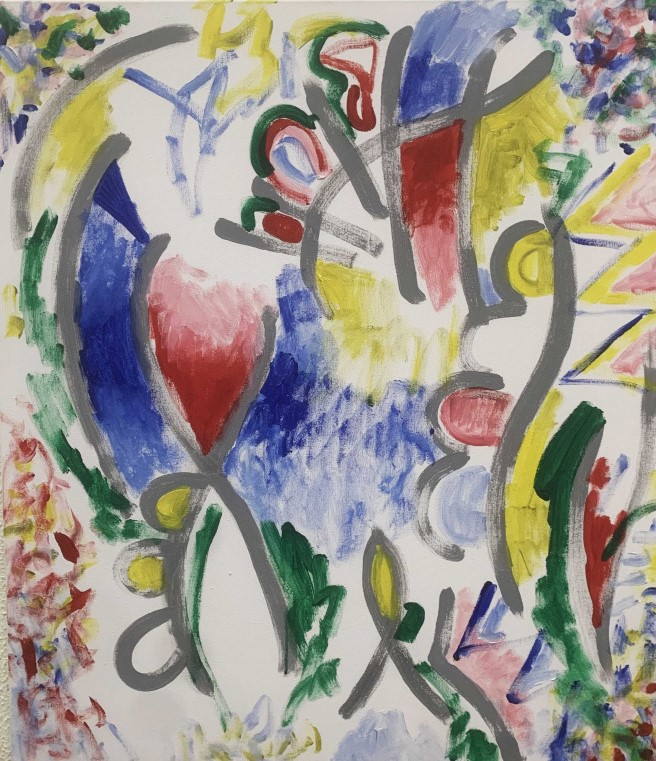
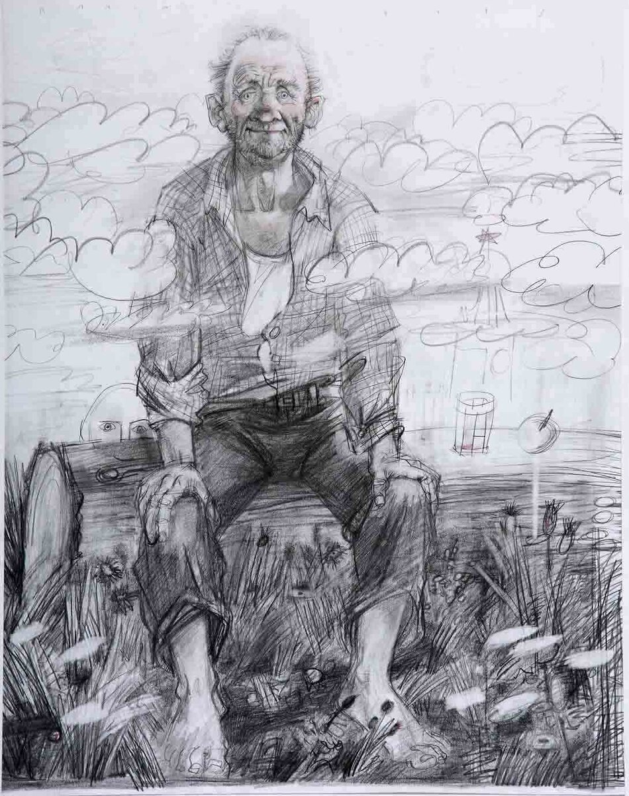

Абстракция в веб-дизайне
Направление, отказывающееся от точного воспроизведения видимой реальности в пользу форм, линий, цвета и композиции
Корнями уходит в художественный авангард начала XX века (Кандинский, Малевич, Мондриан)
Философия — коммуникация через форму и чувство, а не через буквальность
Композиция и пространство
Принципы организации
Может использоваться как симметрия (для создания баланса и гармонии), так и асимметрия (для создания динамики и напряжения)
Ритм и баланс
Ритм может быть музыкальным, пульсирующим или прерывистым. Баланс часто динамический и чувственный
Иерархия элементов
Иерархия создается не размером, а визуальным весом: насыщенным цветом, сложной формой, контрастом
Цвет как эмоция
Никаких ограничений. Палитра может быть монохромной, приглушенной или неистово-яркой, в зависимости от выражаемой идеи
Цвет является главным носителем эмоции. Он используется в чистом виде, не привязанный к реалистичным объектам
Контрастность и насыщенность — ключевые инструменты для управления вниманием и создания эмоционального удара
Шрифт используется как текстура, ритм или визуальный образ
Текст может накладываться, дробиться, взаимодействовать с абстрактными элементами
Владимир Бойченко
Один из самых известных крымских абстракционистов, председатель творческого союза "Академия абстракционизма". Его работы — это сочетание геометрических форм, цветовых пятен и линий.
Александр Андреев
Работы представляют собой сочетание геометрических форм, цветовых пятен и линий, отказываясь от изображения форм реальной действительности.
Абстракция в веб-дизайне — это высшая форма визуальной поэзии
Она превращает сайт из инструмента в произведение искусства
Предлагая пользователю не просто решить задачу, а пережить уникальный эстетический опыт
Язык чувств